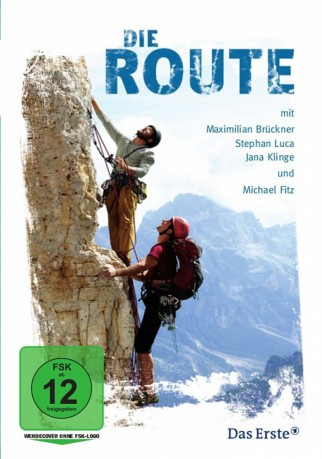

#5897 Die Route
 
 IMDB-Wertung: 5.9 / 10
IMDB-Wertung: 5.9 / 10  Metascore: 0
Metascore: 0 
Tom und Mark sind eine eingeschworene Seilschaft. Während Mark vom Nanga Parbat träumt, richtet Tom mit seiner Freundin Franziska das neue Haus ein. Auf einer besonders anspruchsvollen Route verunglückt Tom schwer. Nicht nur Tom und Franziska müssen ihre Lebensplanung neu überdenken, sondern auch Mark muss sich einer veränderten Realität stellen. Eine Geschichte über Freundschaft, Schuldgefühle und Verantwortung.
Jahr: 2010
Dauer: 88 Minuten
FSK:
Land: Deutschland Studio: BRTonspuren:
Untertitel:
Auflösung: 1080p (1920x1080) Größe: 5601 MB
Genre: Drama
Regisseur: Florian Froschmayer
Drehbuch: Johannes Naber
Soundtrack:
Darsteller:
- Patrick Rapold als Steve Meyer
- Nadia Hilker als Xenia
 Maximilian Brückner als Mark Thaler
Maximilian Brückner als Mark Thaler- Stephan Luca als Tom Heiss
- Jana Klinge als Franziska Steiner
- Michael Fitz als Leo
- Hubert Mulzer als Arzt
- Markus Brandl als Expeditionsleiter
- Myriam Aegerter als Gabi
- Martin Maria Abram als
- Julian Schmieder als Richy
- Petra Veith als
Datei: X:\2010(N-Z)\Route, Die (2010, FSK, 1920x1080).mkv seit 03.04.2017
Festplatte: HD 2010(G-Z)-2011(A-F)
 Es gibt insgesamt 115 Filme in der Gruppe '2010(N-Z)'
Es gibt insgesamt 115 Filme in der Gruppe '2010(N-Z)'